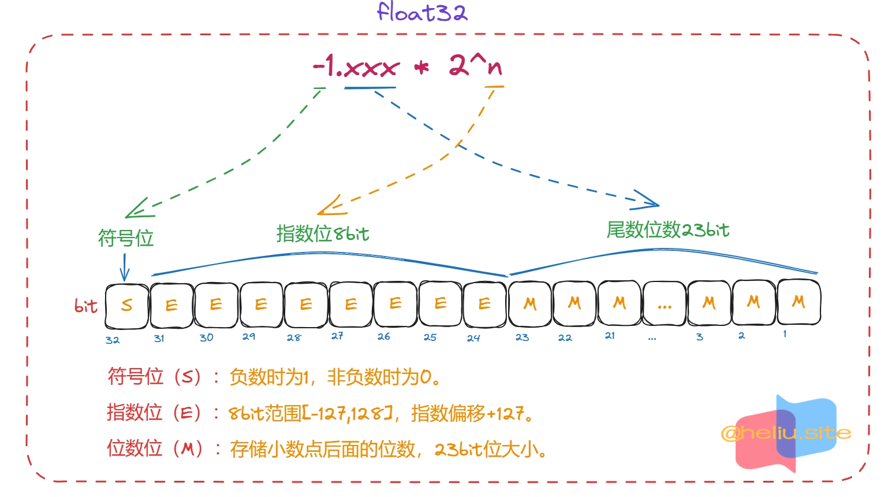
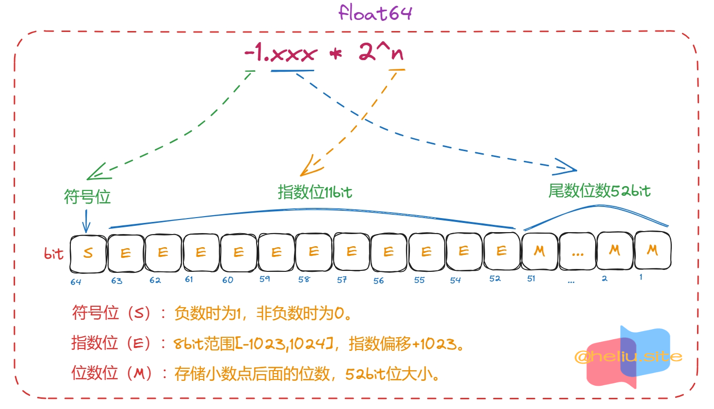
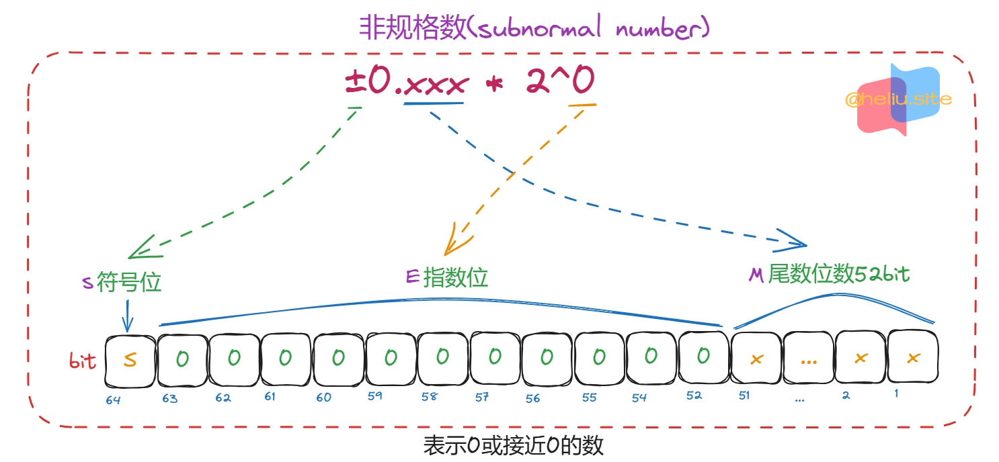
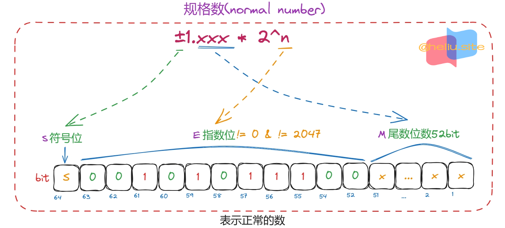
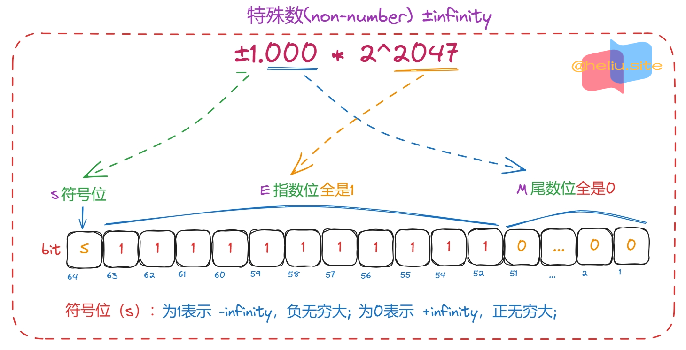
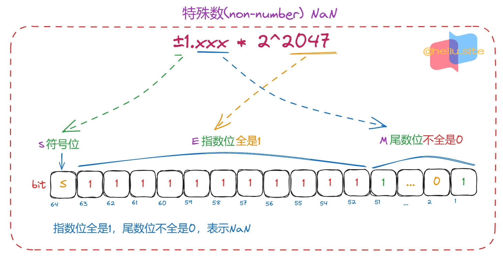

基本数据类型#
布尔类型#
- 布尔型值只能是常量
true或false。
1
2
3
4
5
|
// true 和 false 是两个无类型的布尔值
const (
true = 0 == 0 // 无类型布尔值
false = 0 != 0 // 无类型布尔值（默认值false）
)
|
- Go语言中不允许将整型强制转布尔型，也不允许将布尔型强制转整型。
- 如：
b := (int)(false)，a := (bool)(1)这都是错误的。
- 布尔型无法参与数值运算，也无法与其他类型进行转换，布尔类型仅用在条件判断中。
- 通过指针运算(
unsafe)可以实现0或1转布尔类型。
boolean 内存布局
- 布尔类型占一字节，也就是
8bit，其在内存中存储的值是0或非0。8bit全是0表示false，其他情况表示true。
- 假设定义变量b，
var b bool，默认值为false其内存存储为0；
- 给变量b赋值
true，b = true，其内存设置为1。
- 给变量b赋值
false，b = false，其内存设置为0。
- 布尔类型作为条件判断时，其内存值为0，则判断为
true；非0则判断为false。
- 更多关于布尔类型的元结构类型，参看
_type结构，记录着布尔型的相关参数。
1
2
3
4
5
6
7
8
9
10
11
12
13
14
15
16
17
18
19
20
21
22
23
24
25
26
27
28
29
30
31
32
33
34
35
36
37
38
39
40
41
42
43
44
45
46
47
48
49
50
51
52
53
54
55
56
57
58
59
60
61
62
63
64
65
66
67
68
69
70
71
72
73
74
75
76
77
78
79
80
81
82
83
84
85
86
87
88
89
90
91
92
93
94
95
96
97
98
99
100
|
// 关于定义布尔类型示例
var b bool = false // 定义布尔类型变量b并设置其值为false
var a bool // 定义布尔类型变量a并设置其值为false
// ---------------------------------------------------------------
// 1) 布尔值是以怎样的形式保存在内存中的
// -------------------------------------------------------
// false：在内存中存储的是0b0000_0000也就是整型0
// true： 在内存中存储的是0b0000_0001也就是整型1
// -------------------------------------------------------
// 示例中是 bool转int8类型，当然也能转其他类型
// -------------------------------------------------------
var b0 bool = false // 假设b0地址 0xc000014090
var b1 bool = true
// *bool -> *int8
// i1 存储的是b0的地址0xc000014090 类型为*int8
// 注意区别：*(*int8)(unsafe.Pointer(&b0)) 存储的是b0的值 类型为int8
// 注意区别：(**int8)(unsafe.Pointer(&b0)) *bool -> **int8
i1 := (*int8)(unsafe.Pointer(&b0))
i2 := (*int8)(unsafe.Pointer(&b1))
fmt.Println(*i1, *i2) // 0 1
// ---------------------------------------------------------------
// 2) 整数类型转换成布尔值是怎样个情况
// -------------------------------------------------------
// 0b0000_0000 转布尔是 false，其他全是 true
// 0：转布尔是 false
// 32768：(2^15)转布尔是 false
// 1：转布尔是 true
// 2：转布尔是 true
// -1：转布尔是 true 注意转换时布尔值只需要1字节长度8bit
// -------------------------------------------------------
var b0 int8 = 0
var b1 int8 = 1
i1 := (*bool)(unsafe.Pointer(&b0))
i2 := (*bool)(unsafe.Pointer(&b1))
fmt.Println(*i1, *i2) // false true
// --------------------------------------------------------
// 3) 下面我们把其他类型转换成布尔值然后再转回之前的类型
// --------------------------------------------------------
// 以下代码说明使用unsafe转换仅仅是把第一个字节指向bool地址
// --------------------------------------------------------
// 3.1) int8 -> bool -> int8
var b0 int8 = 0
var b1 int8 = -125 // 1000 0011
i1 := (*bool)(unsafe.Pointer(&b0))
i2 := (*bool)(unsafe.Pointer(&b1))
fmt.Println(*i1, *i2) // false true
i11 := (*int8)(unsafe.Pointer(i1))
i22 := (*int8)(unsafe.Pointer(i2))
fmt.Println(*i11, *i22) // 0 -125
// 3.2) int -> bool -> int
var b0 int = 0
var b1 int = 55536
i1 := (*bool)(unsafe.Pointer(&b0))
i2 := (*bool)(unsafe.Pointer(&b1))
fmt.Println(*i1, *i2) // false true
i11 := (*int)(unsafe.Pointer(i1))
i22 := (*int)(unsafe.Pointer(i2))
fmt.Println(*i11, *i22) // 0 55536
// 3.3) uint16 -> bool 修改 -> uint16
var b0 uint16 = 0
var b1 uint16 = 0b10000000_11111111
i1 := (*bool)(unsafe.Pointer(&b0))
i2 := (*bool)(unsafe.Pointer(&b1))
fmt.Println(*i1, *i2) // false true
*i2 = false
i11 := (*uint16)(unsafe.Pointer(i1))
i22 := (*uint16)(unsafe.Pointer(i2))
// 32768 -> 0b10000000_00000000
fmt.Println(*i11, *i22) // 0 32768
// 4) 上面发现将布尔类型赋值为false会将内存的8为bit全部设置为0，也就是85行代码处
// 那么将一个本就是布尔true类型赋值为true，内存中是否记录的大小为1？
var b1 int = 12
bb := (*bool)(unsafe.Pointer(&b1))
*bb = true
fmt.Println(*(*int)(unsafe.Pointer(bb))) // 1
// 通过代码测试 布尔的赋值就是把内存中的数值false改为0 true改为1
|
- 总结：
- Go内存字段排序是，低字节在前高字节在后。（不同的硬件设备可能不同）。
- 比如33007二进制如
10000000_11101111，在内存中是第一个字节11101111第二个字节10000000。
- 布尔类型占1字节（
8bit），所有位都为0时表示false，否则表示true。
- 因此
10000000_00000000这种形式转bool第一个字节是00000000返回false。
- 使用
unsafe转换类型仅仅是把首字节转bool的地址。
- 也就是上面的33007（
10000000_11101111）转bool，把11101111这个第一个字节地址给布尔值。
- 布尔类型在被赋值时，true会修改内存存储值为1，false会修改存储值为0。
整数类型#
有符号整型#
| 类型 |
长度(B/字节) |
范围(科学计数) |
范围 |
默认值 |
int8 |
1B (8bit) |
[-2^7, 2^7-1] |
[-128, 127] |
0 |
int16 |
2B (16bit) |
[-2^15, 2^15-1] |
[-32768, 32767] |
0 |
int32 |
4B (32bit) |
[-2^31, 2^31-1] |
[-2147483648, 2147483647] |
0 |
int64 |
8B (64bit) |
[-2^63, 2^63-1] |
[-9223372036854775808, 9223372036854775807] |
0 |
int |
与系统有关，32位下4字节，64位下8字节 |
|
|
0 |
补码与源码
- 有符号负数类型转二进制，负数整型数值都是采用补码形式保存，当然正数的补码就是自己。
- 先是将对应的正整数转换成二进制后。
- 对二进制取反。
- 然后对结果再加一。
- 补码的运算：两个补码相加，与二进制加法相同，和仍然是补码（补码计算后可能存在溢出情况）
- 补码转源码。
- 正数：符号位为0时，即补码就是源码
- 负数：符号位为1时，即补码的补码就是源码
# -42存储形式：假设这里是int8类型 8位bit位
# 1. 42转二进制，00101010
# 2. 00101010 取反 11010101
# 3. 11010101加一，11010101 + 00000001 = 11010110 补码
# 最终-42的二进制表示形式，11010110
# 11010110 补码转源码
# 1. 最高位为1表示负数
# 2. 11010110 取反 00101001
# 3. 00101001加一，00101001 + 00000001 = 00101010 源码
# 总结：- 号的操作逻辑就是上面步骤2(取反)和步骤3(加一)
# 最高位表示符号位 0.正数 1.负数
# 内存中都是采用补码形式存储的
1
2
3
4
5
6
7
|
// 验证 -42 是否是 11010110
var b0 int8 = -42
// i1 := uint8(b0)
i1 := (*uint8)(unsafe.Pointer(&b0))
fmt.Printf("%.8b", *i1) // 11010110
|
- 例如：-1是
11111111，127是01111111，最高位bit表示符号位，0表示正数(+)，1表示负数(-)。
# -1 转二进制
# 1 -> 00000001
# ~1 -> 11111110 取反
# +1 -> 11111111 加一
# 127 转二进制
# 127 -> 01111111
-号：操作在整型中的操作步骤(取反)然后(加一)。
1
2
3
4
5
6
7
8
9
10
11
12
13
14
15
16
17
18
19
20
21
|
// 在time.Duration中的String()方法中有这样一段代码
// d 为int64类型，这里正是利用了-(-42)=42, u=(-42)
func (d Duration) String() string {
// ...
u := uint64(d) // 这里如果是负数，则转换后一定是个很大的数字
neg := d < 0 // neg为true表示是负数，为false表示是正数或0
if neg {
u = -u // 这里再次按照负数存储形式，正数的二进制取反加1等到正数也就是(-d)
}
// ...
}
// 比如我们使用上面方法写一个abs取绝对值函数，并转换无符号类型为有符号类型
type i int64
func (i i) abs() uint64 {
if i > 0 {
return uint64(i)
}
return -uint64(i)
}
|
无符号整型(unsigned)#
| 类型 |
长度(B/字节) |
范围 |
范围 |
默认值 |
uint8 |
1B (8bit) |
[0, 2^8-1] |
[0, 255] |
0 |
uint16 |
2B (16bit) |
[0, 2^16-1] |
[0, 65535] |
0 |
uint32 |
4B (32bit) |
[0, 2^32-1] |
[0, 4294967295] |
0 |
uint64 |
8B (64bit) |
[0, 2^64-1] |
[0, 18446744073709551615] |
0 |
uint |
与系统有关，32位下4字节，64位下8字节 |
|
|
0 |
无符号转二进制
- 除二取余，然后倒序排列，高位补零
# 示例42转二进制，正整数转二进制
除二 求余 排序方向 十进制 42
||
2 | 42 .... 42/2 余 .... 0 ^ 0*2^0 = 0
|_______ +
2 | 21 .... 21/2 余 .... 1 | 1*2^1 = 2
|_______ +
2 | 10 .... 10/2 余 .... 0 | 0*2^2 = 0
|_______ +
2 | 5 .... 5/2 余 .... 1 | 1*2^3 = 8
|________ +
2 | 2 .... 2/2 余 .... 0 | 0*2^4 = 0
|________ +
1 .... 1/2 余 .... 1 | 1*2^5 = 32
# 42 对应二进制位 00101010 -> 0*2^0 + 1*2^1 + 0*2^2 + 1*2^3 + 0*2^4 + 1*2^5 = 42
其他整数类型#
| 类型 |
等价于 |
长度(B/字节) |
备注 |
默认值 |
byte |
type byte = uint8 |
1B |
存储一字节内容 |
0 |
rune |
type rune = int32 |
4B |
存储一字符内容(Unciode编码) |
0 |
uintptr |
uint |
4B或8B |
刚好能存储变量地址 |
0 |
1
2
3
4
5
6
7
|
// type byte = uint8
var b byte // 默认值 0
// type rune = int32
var r rune // 默认值 0
fmt.Printf("b: %T\n", b) // b: uint8
fmt.Printf("r: %T\n", r) // r: int32
|
浮点数类型#
| 类型 |
描述 |
默认值 |
float32 |
IEEE-754 32位浮点型数4字节，大约存储小数位数7位（十进制科学计数法n.xxx*e+10情况下），这里的7位是x的位数 |
0.0 |
float64 |
IEEE-754 64位浮点型数8字节，大约存储小数位数16位（十进制科学计数法n.xxx*e+10情况下），这里的16位是x的位数 |
0.0 |
IEEE-754 浮点数在内存中如何存储
- 浮点数需要先转换成二进制才能存储在内存中，因此拆分成正数和小数：
- 对于正数部分：
- 按照有符号规则计算即可，比如42或-42是
00101010，符号位后面单独处理。
- 对于小数部分：
- 对小数点以后的数乘以2，取结果的整数部分(不是1就是0)，然后再用小数部分再乘以2，再取结果的整数部分。
- 以此类推，直到小数部分为0或者位数已经够了就结束。
- 然后把取的整数部分按先后次序排列，就构成了二进制小数部分的序列。
# 如42.635648，处理小数部分就是0.635648
小数部位乘2 = 取正数位 排序方向 十进制 0.6328125
||
0.635648 * 2 = 1.271296 ... 取正数位 ... 1 | 2^-1 1/2 0.5
0.271296 * 2 = 0.542592 ... 取正数位 ... 0 | 0 +
0.542592 * 2 = 1.085184 ... 取正数位 ... 1 | 2^-3 1/2^3 0.125
0.085184 * 2 = 0.170368 ... 取正数位 ... 0 | 0
0.170368 * 2 = 0.340736 ... 取正数位 ... 0 | 0 +
0.340736 * 2 = 0.681472 ... 取正数位 ... 0 | 0
0.681472 * 2 = 1.362944 ... 取正数位 ... 1 v 2^-7 1/2^7 0.0078125
... ...
# 组成二进制 1010001... -> 2^5 + 2^3 + 2^1 + 2^-1 + 2^-3 + 2^-7
# - - - - - - - - - - - - - - - - - - - - - - - - - - - - - - - - - - - - - - - - -
# 如-0.1，处理小数部分就是0.1
小数部位乘2 = 取正数位 排序方向 十进制 0.099609375
||
0.1 * 2 = 0.2 ... 取正数位 ... 0 | 0
0.2 * 2 = 0.4 ... 取正数位 ... 0 | 0
0.4 * 2 = 0.8 ... 取正数位 ... 0 | 0
0.8 * 2 = 1.6 ... 取正数位 ... 1 | 1/2^4 0.0625
0.6 * 2 = 1.2 ... 取正数位 ... 1 | 1/2^5 0.03125
0.2 * 2 = 0.4 ... 取正数位 ... 0 | 0 +
0.4 * 2 = 0.8 ... 取正数位 ... 0 | 0
0.8 * 2 = 1.6 ... 取正数位 ... 1 | 1/2^8 0.00390625
0.6 * 2 = 1.2 ... 取正数位 ... 1 | 1/2^9 0.001953125
0.2 * 2 = 0.4 ... 取正数位 ... 0 v 0
... ...
# 组成二进制 0001100110...
- 然后把整数部分转二进制和小数部分转二进制加一起，如(
101010.1010001...)。
- 浮点数是如何存储在内存中
- 比如上面的
101010.1010001...转换二进制科学计数法表示1.010101010001... * 2^5。
| 十进制 |
二进制 |
计算方式 |
二进制科学计数法表示 |
| 3.5 |
11.1 |
3.5 = 2^1 + 2^0 + 2^-1 |
11.1 = 1.11 * 2^1 |
| 10.625 |
1010.101 |
10.625 = 2^3 + 2^1 + 2^-1 + 2^-3 |
1010.101 = 1.010101 * 2^3 |
| 0.6 |
0.10011001.. |
0.6 = 2^-1 + 2^-4 + 2^-5 + 2^-8 .. |
0.100110011001.. = 1.00110011001.. * 2^-1 |
- 从上面可以观察到，对于任何数来说，表示成二进制科学计数法后，都可以转换成
1.xxx * 2^n形式。
- 对于负数来说，则可以表示成
-1.xxx * 2^n形式。
- 浮点数的存储形式可以分为三部分：
- 符号位（
S）
- 尾数(xxx)（
M）
- 指数(n)（
E）


- 根据指数又分为三种类型：规格数(normal number)、非规格数(subnormal number)、特殊数(non-number)。
| 指数位 -> |
全为0 |
不全为0且不全为1 |
全为1 |
| 对应的数 -> |
非规格数(subnormal number) |
规格数(normal number) |
特殊数(non-number) |
- 非规格数(subnormal number)：指数位全为0，用于表示0或非常接近0的数。

- 规格数(normal number)：指数位不全为0且不全为1，用于表示正常的数值。

- 特殊数(non-number)：指数位全为1，用于表示
±infinity或NaN。


-
偏移量：
- 4字节浮点数的偏移量为+127，float32字节的指数位是占8bit，最大值255。
- 8字节浮点数的偏移量为+1023，float64字节的指数位是占11bit，最大值2047。
- 为何偏移量都取一半作为使用？原因是作为指数n存在负数或正数情况，E是在此基础上做加法。
- 7 表示为 00000111 0为符号位，代表它是一个正数。
- 如果把 7 和 +7 统一加上偏移量 127，那么 7 就变成 134 ，二进制表示为 10000110。
- -7变成 120 ，二进制表示为 01111000。
- 两者进行比较大小的时候，计算机便无需比较两者的符号位。
-
尾数位的四种舍入方式：因为浮点数并不能表示所有的实数，因此为了尽量的逼近真实数字有如下舍入方式。
- 向偶舍入：这是最常用的舍入方式，也称为“四舍六入五成双”。
- 向零舍入：即朝着数轴零点方向舍入，即直接截尾。
- 向上舍入：向着数轴越大的数舍入。
- 向下舍入：向着数轴越小的数舍入。
- 下面以十进制为例，分析向偶舍入：
1.40尾数<=0.4，直接舍弃，值为1。1.60尾数>=0.6，入位，值为2。1.5尾数为0.5，向偶舍入为2。2.50尾数为0.5，向偶舍入为2。-1.50尾数为0.5，向偶舍入为-2。
| 方式 |
1.40 |
1.60 |
1.50 |
2.50 |
-1.50 |
| 向偶舍入 |
1 |
2 |
2 |
2 |
-2 |
| 向零舍入 |
1 |
1 |
1 |
2 |
-1 |
| 向下舍入 |
1 |
1 |
1 |
2 |
-2 |
| 向上舍入 |
2 |
2 |
2 |
3 |
-1 |
- 用RR…RDD…D来表示一个二进制小数，R表示保留位，D表示舍去位，那么有以下规则：
- DD…D < 10…0 -> 直接舍去
- DD…D > 10…0 -> 向上舍入
- DD…D = 10…0 -> 向偶数舍入，细则：
- RR…R = XX…0，直接舍去
- RR…R = XX…1，向上舍入
var f float64 = -0.1 转换成 1.100110011001.. * 2^-4，尾数以1001重复，因此进入加一。
var f float64 = -0.1 转换成 1.100110011001.. * 2^-4，尾数以1001重复，因此进入加一。
1
2
3
4
5
6
7
8
9
10
11
12
13
14
15
16
|
// 验证 float32 存储 0.6
var b0 float32 = 0.6
i1 := (*uint32)(unsafe.Pointer(&b0))
fmt.Printf("%b", *i1) // 00111111 00011001 10011001 10011010
// float32情况下，最后体现了 11001 -> 11010 0舍1入
// 0.6 -> 00111111000110011001100110011010
//-0.6 -> 10111111000110011001100110011010
// 验证 float64 存储 -0.1
var b0 float64 = -0.1
i1 := (*uint64)(unsafe.Pointer(&b0))
// 10111111 10111001 10011001 10011001 10011001 10011001 10011001 10011010
fmt.Printf("%b", *i1)
|
1
2
3
4
5
6
7
8
9
10
11
12
13
14
15
16
17
18
19
20
21
22
|
// math/const.go 文件
// Floating-point limit values.
// Max is the largest finite value representable by the type.
// SmallestNonzero is the smallest positive, non-zero value representable by the type.
const (
// 2**127 * (2**24 - 1) / 2**23 == 2^128 - 2^104 == (2^127+...+2^0+1) - (2^103+...2^0+1)
// 2^127 + 2^126 + ... + 2^104 == 1.11111111_11111111_1111111*2^127 实际存储存储
// 32bit全部存储如 0_11111110_11111111111111111111111
// 32为规范数的指数范围在[-126,127]，因为指数全零为全壹表示其他数，偏移量127，指数方位[1,254]
MaxFloat32 = 3.40282346638528859811704183484516925440e+38 // 2**127 * (2**24 - 1) / 2**23
// 1 / 2**(127 - 1 + 23) == 1.0 * 2^-149 == 0.00000000_00000000_0000010 * 2^-127
// 32bit全部存储如 0_00000000_00000000000000000000001 这里是因为0.的0也被存储到内存中了，这就是当指数为0时是一种特殊情况
// 2^-127 --> 0_00000000_1000000_00000000_00000000
// 2^-128 --> 0_00000000_0100000_00000000_00000000
// 2^-129 --> 0_00000000_0010000_00000000_00000000
// 2^-149 --> 0_00000000_0000000_00000000_00000001 当指数全为0时，系数以 0. 开头
SmallestNonzeroFloat32 = 1.401298464324817070923729583289916131280e-45 // 1 / 2**(127 - 1 + 23)
MaxFloat64 = 1.797693134862315708145274237317043567981e+308 // 2**1023 * (2**53 - 1) / 2**52
SmallestNonzeroFloat64 = 4.940656458412465441765687928682213723651e-324 // 1 / 2**(1023 - 1 + 52)
)
|
复数类型#
- 复数是在浮点数的基础上进行存储的，那么也就很好理解浮点数的存储形式。
complex64是由两个float32格式形式保存的，因此实部和虚部都是float32形式保存，共占8字节。complex128是由两个float64格式形式保存的，因此实部和虚部都是float64形式保存，共占16字节。
| 类型 |
长度 |
内存对齐 |
complex64 |
32位浮点数构造复数 占8字节 |
4B |
complex128 |
64位浮点数构造复数 占16字节 |
8B |
1
2
3
4
5
6
7
8
9
10
11
|
// complex64 等价于
type clx64 struct {
real float32 // 实数 4Byte
imag float32 // 虚数 4Byte
}
// complex128 等价于
type clx128 struct {
real float64 // 实数 8Byte
imag float64 // 虚数 8Byte
}
|
- 声明复数，以及
real()和imag()函数使用。
1
2
3
4
5
6
7
8
9
|
var c complex128 = 1.0 + 1i
// %v 以原形式输出
fmt.Printf("value %v", c) // value (1+1i)
// complex()函数创建 complex128类型
cc := complex(2, -3)
fmt.Printf("value %v", cc) // value (2-3i)
// real()获取复数实部 imag()函数获取复数虚部
fmt.Println(real(cc), imag(cc)) // 2 -3
|
- 验证复数的内存存储结构。
1
2
3
4
5
6
7
8
9
10
11
12
13
14
15
16
17
18
19
20
21
22
23
24
25
26
27
28
|
// complex64 类型验证，我们前面验证过float32类型的0.6格式这里也使用0.6
var b0 complex64 = 0.6 + 0.6i
i1 := (*uint64)(unsafe.Pointer(&b0))
// 11111100011001100110011001101000111111000110011001100110011010
fmt.Printf("%b\n", *i1)
// 00111111000110011001100110011010 -> 0.6 实部
// 00111111000110011001100110011010 -> 0.6 虚部
// > ------------------------------------------------------------------
// complex128是占16字节
var b0 complex128 = 0.6 - 0.6i
i1 := (*float64)(unsafe.Pointer(&b0))
fmt.Println(*i1) // 0.6
i11 := (*uint64)(unsafe.Pointer(&b0))
// 0011111111100011001100110011001100110011001100110011001100110011 -> 0.6 实部
fmt.Printf("%64b\n", *i11)
i2 := (*float64)(unsafe.Pointer(uintptr(unsafe.Pointer(&b0)) + unsafe.Sizeof(uint64(0))))
fmt.Println(*i2) // -0.6
i22 := (*uint64)(unsafe.Pointer(uintptr(unsafe.Pointer(&b0)) + unsafe.Sizeof(uint64(0))))
// 1011111111100011001100110011001100110011001100110011001100110011 -> -0.6 虚部
fmt.Printf("%64b\n", *i22)
|
字符串类型#
- 字符串是一串固定长度的字符连接起来的字符序列，字符串是由单个字节连接起来的，字节使用
UTF-8编码标识的Unicode文本。
- 编译阶段字符串存储在只读数据段，所以字符串在硬件底层阻止被修改。
- 但是在运行阶段字符串则是被分配在堆上但是也不允许被修改，原因是在语言层面被阻止的，但是我们可以使用
unsafe绕过语言层面进行修改。
- 首先字符串是
UTF-8编码标识的Unicode文本，需要先了解Unicode编码的处理，再看Unicode转UTF-8。
- 需要记住字符的存储形式。
1
2
3
4
5
6
|
type StringStruct struct {
// 存储联系内存的首地址，这里也就是[...]byte类型的数组，连续的字节是utf8编码的数据
Data unsafe.Pointer
// 字符串长度
Len uintptr
}
|
- 更多关于字符讨论参看后面字符串文档。
复合类型#
- 指针类型（
pointer），也就是如 *int、*string等类型，存储的是基础类型的引用地址。
- 数组类型（
array），连续内存分布存储的，其数组长度保存在类型结构中，这也就是导致不同长度的相同类型的数组属于不同类型的原因(类型hash不同)。
- 结构体（
struct），连续内存分布存储的。
- 通道类型（
chan），hchan结构体的引用地址。
- 函数类型（
function），funcval结构体的引用地址。
- 切片类型（
slice），结构与字符串的结构大体相同只多了个Cap字段存储容量，存储形式大体相当。
- 接口类型（
interface），eface和iface结构体的 ，存储类型元素数据、动态类型相关信息。
- 字典类型（
map），hmap结构体的引用地址。
错误类型#
Go语言预定义类型，也就是iface结构体，非空接口类型。- 错误类型是接口，
nil值表示无错误。
- 只要实现接口的方法及继承了该接口。
1
2
3
4
|
// Error接口
type error interface {
Error() string
}
|
- 数组(
array)和结构体(struct)都是聚合类型，长度固定。
- 切片(
slice)和字典(map)都是动态数据结构，长度可变。
- 浮点数存储